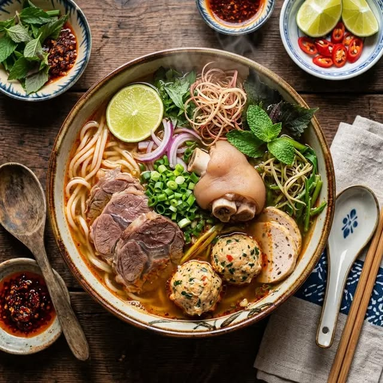

ẨM THỰC VÀ DU LỊCH VIỆT NAM

Bún Bò Huế
Bún bò là một trong những món ăn đặc sản nổi tiếng của ẩm thực Việt Nam. Món ăn hấp dẫn bởi nước dùng đậm đà thơm mùi sả, mắm ruốc cùng thịt bò mềm và chả quết tinh tế. Đây là niềm tự hào của văn hóa ẩm thực miền Trung nói riêng và Việt Nam nói chung.
Phố Cổ Hội An
Hội An là một đô thị cổ nằm ở hạ lưu sông Thu Bồn, thuộc tỉnh Quảng Nam. Nơi đây nổi tiếng với những ngôi nhà cổ mái ngói rêu phong, không gian đèn lồng rực rỡ và nền văn hóa di sản phong phú, thu hút hàng triệu du khách trong và ngoài nước mỗi năm.